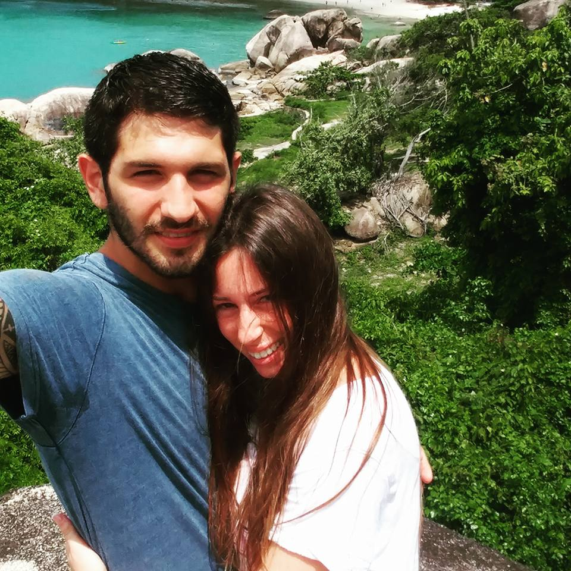

Photo gallery
Our honeymoon to thailand
by Eviatar Brigman

About us
My wife and me got married at july of 2015 and even befor the wedding she told me
that our honeymoon is going to be in thailand.. she as been there befor and was
sure i will love it there, now just a one detail about me.. i hate traveling.. lets just say i like to be at home.
so a year after the wedding we landed in thailand, the honeymoon was a month long and contary to what i thought
i end up haveing a lot of fun,
we had a lot of experiences some were great and some were less then great..
i will tell you about them further on.
About thailand
As you probebly know thailand is "pretty big" 😜 only 23 times the size of israel .
you can enjoy the thai authentic culture a and same time a vibrant night scene.
there are big modern cities, lots of tropical islands, authentic villeges and towns, beautiful beaches
and 127 national parks. so basically every one can find something he likes in thailand.
i will list my to favorit places i recommend you visit.
The places we traveled to:
- Chiang mai
- Bangkok
- Ko pha-ngan
- Ko samui
- Phuket
Our experiences in thailand
So like i said earlyer we had differnt kinds of experiences while traveling in thailand
i will share with you some of the things happen to us is every place i recommended.
- Chiang mai - the first place we traveled was chiang mai we got there at 11pm and were pretty shocked and we asked
the taxi driver to game us to the wrong hotel so we drove for 55 minutes and got to a scary hotel in the
middle of nowhere, there where only teenagers there and no one spoke english.. not a great start..
but we came to our senses and booked another hotel on the wedsite of booking.com and called another
taxi to take us and every thing end up well. we went to an elephant shelter for elephants and it was an amazing experience,
we feed them and washed them in the river and just spend the day looking out for them.
- Bangkok - bangkok is incredible a huge city with hundreds of skyscrapers, we went to a few malls
each one you can walk for hours and not see all the stores, there are a lot of modern restaurants but most
importantly a KFC store in every corner 🤤. we visited the sea world witch is the bigges in all of asia and it was
truely beautiful to see. it was also where we flew back home only we missed the plane and end up buying
another plane ticket :( again lots of differnt experiences.
- Ko samui - ko samui was so magical with its beautiful white beaches.
we booked an amazing hotel right on the beach, we rented a motorcycle it was exciting and scary at the same time
becase i never drove a motorcycle befor and in thailand they drive at the opposite lane so concerned for our lifes
we returned the motorcycle and rented a car it was great we did a trip all around the island, stopped at a couple
of breathtaking lookout sites and drove the a famous temple. at the evening we went the farmer's market
it had varity of goods you can buy from the many sales booths.
- Ko pha-ngan - in ko pha-ngan we meet a jewish couple from new york that were our age and where
on there honeymoon as well, we clicked right away and end up spending five days together, we took them
to a famous israeli restaurant on the island owned by a israeli man that relocated to ko pha-ngan,
the dishes where of israeli cuisine and we all enjoyed very much, it was a little riminder from home.
we also took an organized boat trip to see the amazing nature and landscape surrounding ko pha-ngan.
- Phuket - finelly phuket, the truth is that it was our least favorit place but its due to our personality,
phuket i known for hernt extravaga night life scene with lots of dance and sex clubs and we dont like
to go to this kind of places especially not on a honeymoon but if thats something you love phuket is
the perfect place for you, it also has great seafood restaurants where the food is very fresh , the freshest it gets.
and unfortunately my wife's engagement ring got stolen from our hotel room, we did learn not leave valuables in the suitcase. 😕